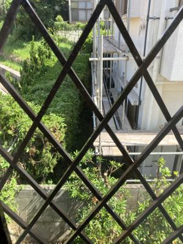
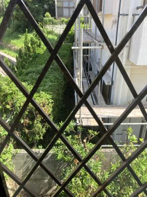

うるがいの話 ある日
最新: お隣さんの足場【うるがいの話 ある日】とは 一日だけのプログです
『うるがいの話』の最新一日だけのプログで、通信料が少なく経済的だ。カニの画像をクリックすると全ての日付が載る『うるがいの話』サイトを表示します
|
|
【うるがいの話】 うるがい(ｳﾙｶﾞｲ urugai)とは、『もずくがに』の名前でとても大きくなります。 |
|---|---|
|
|
【カミマヤーの話】 猫のことを方言でマヤーといいます。カミマヤー（kamimayaa）とは、神の猫のことです。 |
|
【たながぁの音楽】 たながぁ（ﾀﾅｶﾞｰ tanagaa）とは手長えびのことで、何種類かあり大きいのは車 エビぐらいになります。 |

|
【ぶながぁの話】 ぶながぁ(ﾌﾞﾅｶﾞｰ bunagaa)とは、赤い髪の毛、赤い身体、そして身長は１ｍ２０ｃｍ ぐらい、川の蟹を食べているの目撃された。場所は沖縄県国頭郡大宜味村のと ある村僕の隣近所に住んでいる爺さんから、聞いた話です。 |
|
|
【ギーマの話】 ギーマ(giima)とは、山原の里山に咲くスズランに似た、 花を付けます。実は食べられます、 気が付くと口の周りが紫になっています。 |
2023年09月19日 (火）お隣さんの足場
15:06
 

７時半から、なにやら大型の車の音が聞こえる。お隣さんの足場を組み立てる
ため、大きないトラックが２台、小型のトラック１台がお隣さんの周りにとま
る。私の駐車場の付近も狭くなっている。先週の土曜日の夕方、『塗装工事に
伴う・ご協力願い』のチラシがポストに入っていた。おえ！、直前かよと少し
イラと来る。工事期間は１０月末までの予定とある、うちも予定があるのに。
マ、剪定がギリギリセーフ（２トントラックと小型トラックが剪定の間、駐車
していた）。８時半頃、ピンポーンと足場の責任者が、足場組立の際に駐車場
の車に、物が落ちるかもしれないので移動して頂けると・・・』、直ぐに駐車
場から、門の前に移動する。昼間、駐車場をみると足場組立の板やパイプが置
かれている、！！、マ、いいか。お隣さんの台風の被害が大きかったんだし。
進捗遅く、今日で終るのでしょうか？。なお、お隣さんからはなんの音信がな
い。
１５時０１分 ビットコインの総資産 ￥１１、４９３（↑６５）